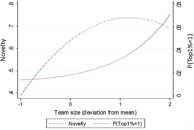
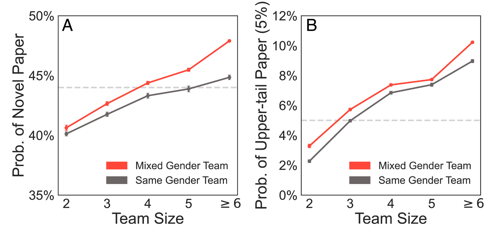
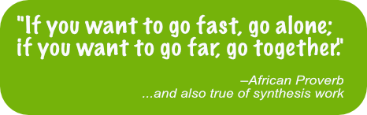
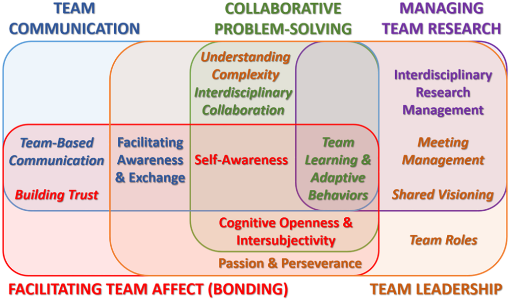

Team Science Practices
Overview
In this module, we’ll dive into some of the literature underlying our recommended team science practices (the science of team science). We’ll also explore some of the more common types of conflicts that arise in synthesis work and ways to anticipate, prevent (when possible), and resolve those conflicts.
Learning Objectives
After completing this module you will be able to:
- Interpret and enact current best practices in team science
- Identify different interaction styles and the effect they have on group dynamics
- Identify benefits (and potential costs of) diverse teams
- Describe ways to mitigate costs of diverse teams
- Explain methods for improving the experience of virtual participants on hybrid teams
Preparation
Each project group should:
- Plan on providing a 3-5 minute project summary and update on recent progress and any questions/issues that are arising
- Finish their internal ground rules (if not already complete)
Networking Session
We’ll begin this session’s discussion with a conversation among participants in a recent synthesis group that tackled a particularly broad disciplinary stretch. The Synthesizing population and community synchrony to understand drivers of ecological stability across LTER sites brought together mathematicians, modelers, and empiricists to apply novel analytical strategies to understanding the impact of population fluctuations.
Panelists will briefly introduce themselves and their experience with the synthesis group, which encountered a variety of challenges in their work. Ultimately, they produced several effective and well-received papers, but they had to introduce some innovations in working group approach to get there.
- Dr. Lauren Hallett, Associate Professor, University of Oregon
- Dr. Max Castorani, Associate Professor, University of Virginia
- Dr. Jonathan Walter, Senior Researcher, Center for Watershed Sciences, University of California, Davis
Science of Team Science
Research in management, organizational behavior, and psychology has long focused on the performance of teams–often in military, healthcare and industrial contexts. While many aspects of this work are also relevant to scientific teams, there are some key differences having to do with differences in context, leadership, and incentives. In the early 2000’s–as collaboration in science increased–the need for empirical research into the workings of science teams became apparent. The field of “science of team science” or SiTS was launched in 2006 with a conference at the National Institutes of Health (Stokols et al. 2008).
A National Academies study on the Science of Team Science (NRC 2015) assembled the existing evidence base and launched a flurry of research into how team composition, coordination, support, and organizational context could improve outcomes for science teams. A new National Academies study on Research and Application in Team Science is currently in progress. Our goal here is not to review the whole field, but to provide a framework for thinking about the team functioning and process and to identify some key team science practices that are supported by both research and practical experience.
Teams have a Predictable Trajectory
Creating a team is not just a matter of putting a bunch of people in a room together. Social scientists have identified consistent patterns in the evolution of teams (Tuckman 1965, Tuckman and Jenson 1977). Knowing that this is a process nearly every team experiences may make it (at least somewhat) more comfortable.
Teams that are assembled from across organizations must agree to adopt a common set of norms and processes in order to progress from storming to performing. This can feel like a detour from the science, but a modest early investment in developing shared practices pays off in the long run.
Instrumental Benefits of Diverse Teams
There is pretty good evidence that collaborative teams produce research that is more novel and has higher impact than work produced by individuals or smaller more homogeneous groups (Lee at al. 2015, Hong and Page 2024). Wooley et al (2010) found evidence for a “collective intelligence” in teams, which is not strongly correlated with the average or maximum individual intelligence of group members but is correlated with the average social sensitivity of group members, the equality in distribution of conversational turn-taking, and the proportion of females in the group.
Similarly, in a study of 6.6 million medical research papers, Yang et al. found that mixed gender teams consistently produced more novel and more impactful products. In another bibliographic analysis Abbasi and Jaafari (2013) found that inter-institute and inter-university collaborations resulted in higher-impact publications. Interestingly, the result was much weaker for international collaborations.


 It seems reasonable to expect that the effects of cultural and economic diversity on teams would be similar to that of gender diversity, but those factors remain harder to parse at this scale. In any case, the bump in creativity or publishing impact is only a happy side effect of assembling a diverse team. The real reason to do so is that it allows us to tackle bigger questions, makes our findings more relevant, our science more fun, and our world more fair. What it does not do (at least in our experience) is make the process faster!
A More Nuanced View Emerges
The paradox of team science is that the very factors that slow progress may be exactly the factors that generate new insight – Milliken and Martins’ (1996) double-edged sword. The pressing question becomes not: “Does diversity impove team performance?” but rather: “How and when does diversity improve team performance?”
What mechanisms are responsible for the diversity effect?
Information Elaboration
The categorization-elaboration model (CEM, van Knippenberg et al. 2004) proposed that information elaboration—-that is, the exchange, discussion, and integration of task-relevant information and perspectives, was responsible for many of the benefits attributed to diverse groups. But later researchers found there were a few necessary conditions for cognitive elaboration to take place and for groups to reap the benefits. Only when team members brought a learning goal orientation to their work and when they remained open to revising their original ideas (Nederveen Pieterse 2013) did diversity improve team performance.
Avoiding ‘groupthink’
We are all familiar with the “we’ve always done it this way” effect that can happen when a group of people have been working together for a while. By introducing people from new fields, laboratories, or cultures, that complacent thinking is disrupted. Often, the very act of justifying why we do something the way we do can invite a rethinking and improvement.
Metacognition
Metacognition, or “thinking about thinking” requires individuals to reflect and articulate their process for acheiving new knowledge. What information goes in? Is information missing? How should it be analyzed and interpreted? Are those conclusions justified?
Enhanced group scanning ability and consideration of alternative solutions
A science team may include members from different research disciplines, sectors, geographies or cultures. Along each of those axes, team members will have different personal networks and be more (or less) familiar with different literatures, models, communities, tools, and solutions. Collectively, the group has a much broader range of information to draw on…but only if group members feel empowered to contribute.
Better task completion and more efficient use of resources
“Many hands make light work” the saying goes. Think of a meta-analysis where 10 group members can each read 30 papers instead of 1 individual reading 300 papers. Dividing the workload can speed up the process, but only if there is an efficiant way to manage dividing the work and then bringing the results back together again. Similarly, relying on a few skilled coders can be much more efficient than each individual writing their own code, but unless the group has a mechanism for getting broad input on key decisions, they will lose the value created by bringing together a larger group.
Meet as project teams in breakout groups for 10 minutes. Each group comes up with one practice that they could include in their group practice guidelines to support each of the above mechanisms. In large group, each project group descibes one of their practices and how they think it will help.
In order for the above mechanisms to operate, teams need to cultivate conditions that encourage all members to contribute at the times and in the ways that they are most skilled and effective. These include:
- Cultivate a learning goal orientation rather than a product goal orientation. Expect to learn from one another and adapt your expectations and plans (Nederveen et al. 2013).
- Remain open to revising assumptions and world views. When divergent positions are met only with resistance, groupthink gains the upper hand.
- Cognitive trust is the rational belief that group members can and will deliver on their portion of the work. When it isn’t present, group members tend to pull back on their own contributions. Good coordination supports cognitive trust by providing clarity and accountability about who agreed to do what work and whether they delivered. It ensures that contributions can be appropiately credited and that work isn’t unnecessarily duplicated. Effective coordination and facilitation make space for all group members to engage.
- Fast and slow processors can be accommodated by making space for written as well as verbal contributions and allowing “thinking time” before expecting a response.
- Visual, auditory and kinesthetic learners take in information (and are more or less fluent) in different formats. Try to provide key information (and allow input) in more than one format.
- Those with caregiving responsibilities may have unpredictable availability and shorter periods of concentrated effort. A task management system (such as GitHub Projects or Trello) that breaks down tasks into manageable chunks and provides necessary contexts can help them contribute without as much task-switching cost.
- Stratgies for managing different geographies include virtual meetings, pulsed contributing times, and asynchronous editing of shared documents.
- Affective trust is the belief (usually grounded in common experience) that group members have your best interests in mind. Some strategies for building it include:
- Spend social time together - meals, activities when in-person, but also, don’t skimp on icebreakers and check-ins when virtual
- Pay attention to mutual respect and speaking time. Explicitly acknowledge and credit new ideas as they come up.
- Be willing to look foolish. Ask the “dumb” questions that surface unquestioned assumptions. When some (leaders especially) make themselves vulnerable, it provides safety for others to do so.
- Consider assigning a vibes-keeper to track when the group becomes impatient, offended, or disengaged.
- Spend time early to talk through various perspectives on the question that may be present in the group.
- Attend to conflicts as they arise.
All Contribute Some; None Contribute All

Scenarios
For the following set of scenarios, you will be randomly assigned to one of three breakout groups for a 20-minute discussion. After you join the group:
- Briefly introduce yourselves
- Navigate to the notes document in the cohort folder.
- Choose a notetaker, a reporter (may be the same as the notetaker or not), and a timekeeper (to keep the group moving through the questions).
- A volunteer reads the scenario out loud for the group
- Take a minute or so to think quietly
- Discuss
- Try to articulate the emotional aspects, the procedural aspects, and the structural aspects of the conflict from each participant’s point of view.
- What interventions might have prevented , or could now resolve, the conflict?
Alix, a postdoc in the lab of Dr. Chambers, a well-known hydrologist, enjoys data analysis and offers to assemble and clean the group’s data using MatLab. Although only one other person in the group uses MatLab, Alix seems confident that the program is well-suited for what they need to do and that they can devote enough time to do the work.
That winter, Alix’s father is diagnosed with cancer and Alix starts taking him to chemo treatments. They are already half-way through the analysis and it would take weeks for someone else to start over. They hate to let the group down and say that they will be able to work on data while waiting around in doctors’ offices. But as Winter drags into Spring and nothing has happened, the group gets frustrated.
Terry starts working on the data in R, but struggles to make sense of Alix’s notes. By Fall, their one year of funding runs out and they have nothing to show for it.
Discussion questions:
- Which sides of the satisfaction triangle are the different players in this scenario inhabiting? What needs are in conflict?
- Identify at least three points at which someone could have intervened to change this outcome and better satisfy the needs of each party
- Who and how?
- Why might they have chosen not to?
- What practices could make it easier for them to take action?
A synthesis group is attempting to connect data on municipal services with wildlife sightings at the urban-wildlands interface. Maria, a PhD student in sociology, is mainly focused on collecting municipal data. During a whole group discussion on where the group might find additional data sources for wildlife observations, she mentions a paper she had seen recently on scraping data from social media.
Later that week, when the wildlife subgroup meets, they get excited about finding wildlife sightings through NextDoor and begin pursuing the idea. It works out better than they could have hoped and James, an assistant professor in computer science who is preparing his tenure package, spearheads a paper on their use of the technique. At the next full group meeting, he mentions that it is ready to be submitted.
Maria would have appreciated the chance to work with James and is disappointed and angry that no one mentioned the paper to her.
Discussion questions:
- Where is Maria on the satisfaction traingle? Where is James?
- What should Maria do now?
- What procedural, emotional, and substantive needs might each player have in this situation? How might they balance those needs in seeking a solution?
- How might the group have avoided the situation in the first place?
Arturo, a senior climate scientist with a large lab, brings two postdocs and a grad student to the first working group meeting of the Causes of Harmful Algal Blooms working group. In deciding which scenarios to evaluate, Arturo posits that temperature, rainfall, and growing degree-days will be the primary drivers and offers to assign one to each of his lab members. Arturo is motivated to participate in the working group because it builds on his prior research on climatic influences on HABs. He and his lab members see the working group as a great learning opportunity for early career researchers.
Jasmine, an assistant professor in agronomy with a heavy teaching load, thinks that fertilizer rate and timing of application will be major drivers. Jasmine is highly motivated to play a leadership role in the working group and needs publications to advance her career, but her time is limited. She has time to find relevant datasets, but can’t commit to doing the analysis and doesn’t have students or postdocs to assign to the project. Looking at the role of coastal agriculture on HABs is central to why she said yes to joining the group.
Discussion questions
- What needs have each of the players in this conflict expressed?
- How should the group go about allocating effort n order to tackle the research project and meet those needs?
- Is it fair to ask one of Arturo’s postdocs to work outside their field? Why might they want (or not want) to do that?
- What other solutions might they consider?
Whole Group Discussion
Each group describes their analysis of their assigned situation and a proposed solution/intervention. Discuss commonalities and any ideas/proposals for updating group ground rules or process plan.
References
- Abbasi, A., and A. Jaafari. Research impact and scholars’ geographical diversity. Journal of Informetrics. 2013
- Graffius, Scott M. Leverage the Phases of Team Development — Forming, Storming, Norming, Performing, and Adjourning — to Help Your Teams be Happier and More Productive: 2023 Update. 2023
- Fiore et al. Interdisciplinarity as Teamwork: How the Science of Teams Can Inform Team Science. Small Group Research. 2008
- Hong, L., & Page, S. E. Individual selection criteria for optimal team composition. Theory and Decision. 2024
- Lee, You-Na, John P. Walsh, Jian Wang. Creativity in scientific teams: Unpacking novelty and impact. Research Policy. 2015
- Lotrecchiano, Gaetano R., Deborah DiazGranados, Jennifer Sprecher, Wayne T. McCormack, Damayanthi Ranwala, Kevin Wooten, Daniel Lackland, Heather Billings, and Allan R. Brasier. Individual and team competencies in translational teams. Journal of Clinical and Translational Science. 2021
- Milliken, Frances J. and Luis L. Martins. Searching for Common Threads: Understanding the Multiple Effects of Diversity in Organizational Groups. The Academy of Management Review. 1996
- Nederveen Pieterse, A., D. van Knippenberg, and D. van Dierendonck. Cultural Diversity and Team Performance: The Role of Team Member Goal Orientation. Academy of Management Journal. 2013
- Stokols, D., S. Misra, R. P. Moser, K. L. Hall, and B. K. Taylor. The Ecology of Team Science: Understanding Contextual Influences on Transdisciplinary Collaboration. American Journal of Preventive Medicine *35:S96–S115.2008
- Tuckman, B. W. Developmental Sequence in Small Groups. Psychological Bulletin 1965.
- Tuckman, B. W., & Jensen, M. A. C. Stages of Small-Group Development Revisited. Group and Organizational Studies 1977
- van Knippenberg, D., De Dreu, C. K. W., & Homan, A. C. Work Group Diversity and Group Performance: An Integrative Model and Research Agenda. Journal of Applied Psychology 2004
- Woolley, A. W., C. F. Chabris, A. Pentland, N. Hashmi, and T. W. Malone. Evidence for a Collective Intelligence Factor in the Performance of Human Groups. Science *330:686–688.2010
- Yang, Y., T. Y. Tian, T. K. Woodruff, B. F. Jones, and B. Uzzi. Gender-diverse teams produce more novel and higher-impact scientific ideas. PNAS. 2022
Additional Resources
Papers & Documents
- Bates, A.E. et al., Overcome Imposter Syndrome: Contribute to Working Groups and Build Strong Networks. Biological Conservation. 2024.
- Deutsch, L., et al., Leading Inter- and Transdisciplinary Research: Lessons from Applying Theories of Change to a Strategic Research Program. Environmental Science & Policy. 2021.
- Folger, J.P., Poole, M.S., & Stutman, R.K. (2017). Working Through Conflict: Strategies for Relationships, Groups, and Organizations (8th ed.). Routledge. 2017
- Farrell, K.J. et al., Training Macrosystems Scientists Requires Both Interpersonal and Technical Skills. Frontiers in Ecology and the Environment. 2021
- Gaynor, K.M., et al., Ten Simple Rules to Cultivate Belonging in Collaborative Data Science Research Teams. PLoS Computational Biology. 2022
- Hampton, S.E. & Parker, J.N. Collaboration and Productivity in Scientific Synthesis. BioScience. 2011
- Lowman, H. et al., Collaborative consortia can boost postdoctoral workforce development. PNAS. 2024
- Peterson, D.M., et al., Team Science: A Syllabus for Success on Big Projects. Ecology and Evolution. 2023
Workshops & Courses
- Liberatore, A. Developing a Successful Team: Concepts and Strategies to Navigate Change and Conflict Together. 2024.
- National Center for Ecological Analysis and Synthesis (NCEAS) Learning Hub & Delta Stewardship Council. Open Science Synthesis: Team Science for Synthesis. 2023.
- Delta Stewardship Council. Open Science Synthesis: Thinking Preferences. 2021.
Websites
- Lahr, Heather How to effectively engage teams in interdisciplinary collaborations. 2024